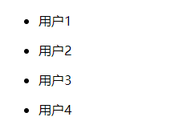

案例
在这个案例中我们将了解Thymeleaf模板引擎的基本功能。
在网页中进行判断
<div th:if="${user}">
<div>存在用户 ${user} </div>
</div>
<div th:unless="${user}">
<div>不存在..</div>
</div>
在网页中写循环
在Controller 中添加数据：
@RequestMapping("/show")
public String demo(Model model) {
List<String> userList = new ArrayList<>();
for (int i = 1; i < 5; i++) {
userList.add("用户" + i);
}
model.addAttribute("userList", userList);
return "show";
}
在 templates 目录下创建文件 show.html：
<!DOCTYPE html>
<html xmlns:th="http://www.thymeleaf.org">
<head>
</head>
<body>
<ul th:each="item,iterStat:${userList}">
<li th:text="${item}"></li>
</ul>
</body>
</html>
运行，然后输入地址访问 localhost:8080/show 即可看到如下页面：
